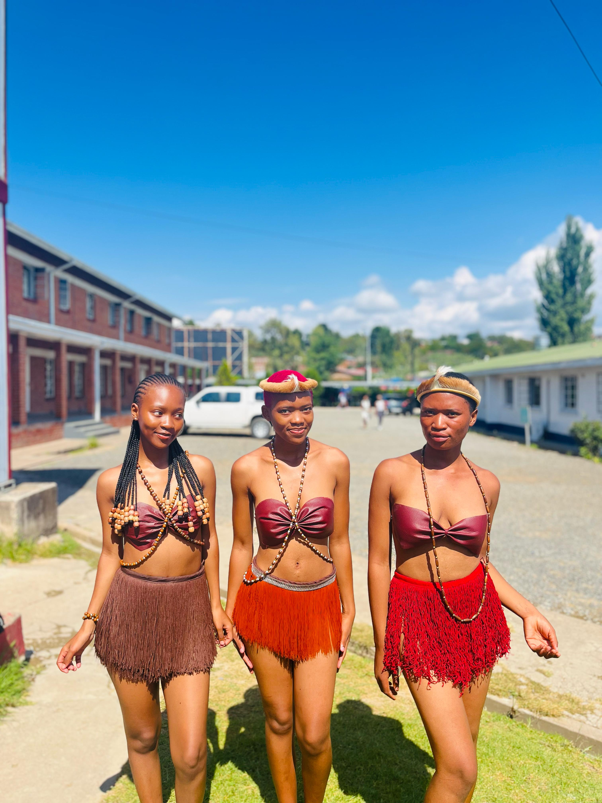
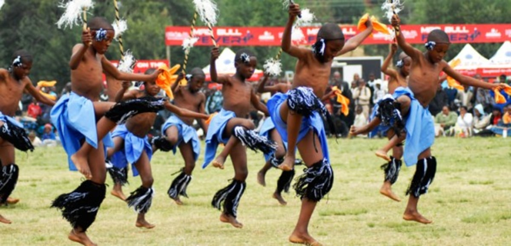

Discover Our Story
A celebration rooted in the heart of Lesotho, bringing culture, community, and creativity together for over three decades.

The Morija Arts & Cultural Festival was founded in 1993 in the small historic town of Morija, located at the foot of the Maluti Mountains in Lesotho. It was born out of a desire to preserve and celebrate the rich cultural heritage of the Basotho people while opening Lesotho to the world as a tourism destination.
Morija holds great historical importance. It is home to the Morija Museum & Archives, the oldest museum in Lesotho, and to Southern Africa’s first printing press, set up by French missionaries in 1841. This rich history makes Morija an ideal location for the festival.
Over the years, the festival has grown from a small local event into an internationally recognized cultural celebration, drawing artists, performers, and visitors from across Africa and around the world.
Lesotho, called the Kingdom in the Sky, is a small country entirely surrounded by South Africa and located high in the Drakensberg mountains. Its culture, Sesotho language, traditional famo music, and Basotho blankets all show the pride of its people. The Morija Festival is an annual celebration that brings this pride to life.
The Morija Festival warmly welcomes all visitors, whether you are from Lesotho or travelling from abroad.
Travellers from around the world seeking an authentic African cultural experience.
Citizens of Lesotho celebrating their own heritage, music, and traditions.
Scholars studying African culture, history, music, and community development.
Artists and content creators capturing the beauty and energy of Lesotho.
A family-friendly event with activities and performances for all ages.
Southern African travellers from SA, Botswana, Zimbabwe and beyond.
The festival is more than entertainment; it preserves Basotho culture. Traditional ceremonies, storytelling, and craft demonstrations keep old skills alive for future generations
Local artisans display handmade Basotho blankets, jewelry, pottery, and woven crafts. This not only provides genuine economic opportunities for communities in and around Morija but also helps preserve traditional techniques passed down through generations.
See the Programme